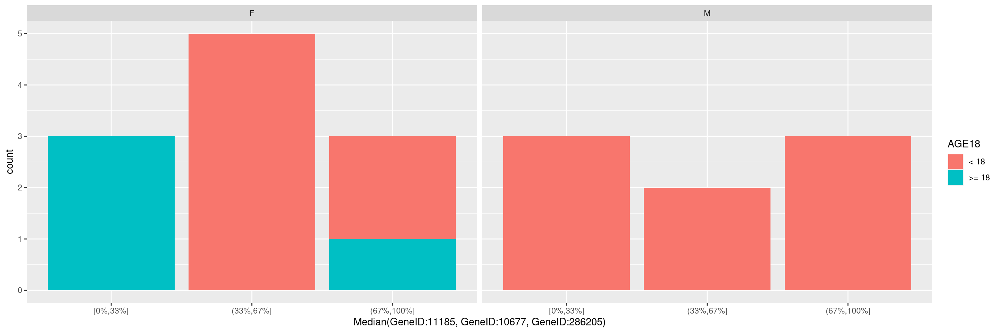
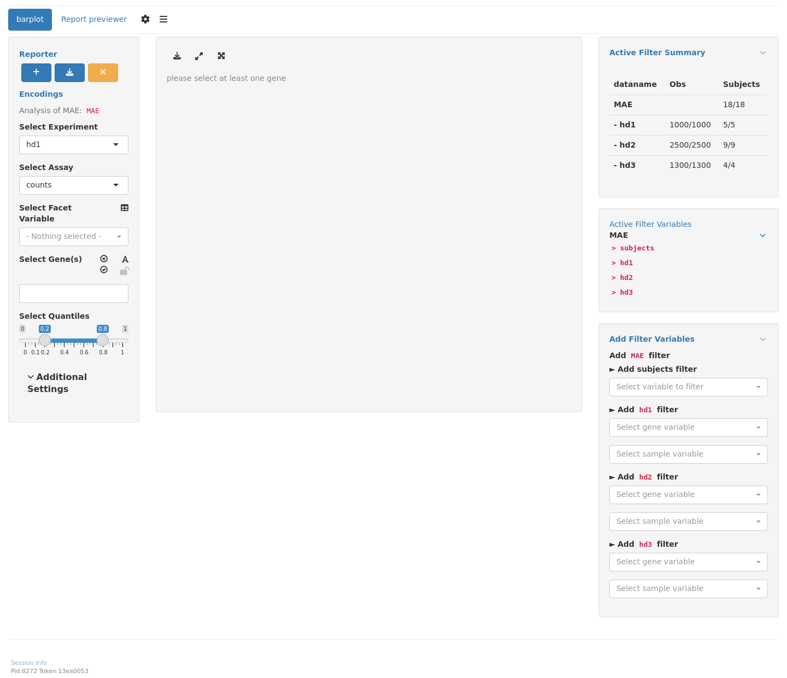

RNAG6
RNAseq Barplot
This page can be used as a template of how to use the available hermes functions to produce a barplot of the dichotomized gene expression counts into two or three categories based on custom defined percentiles.
The draw_barplot() function used below needs HermesData as input. See RNAG1 for details on how to import, filter and normalize HermesData.
We can create a barplot for gene expression counts of single genes by specifying a gene in the gene_spec (gene specification) as follows. This function creates a scatterplot with the default percentiles (0.33, 0.67), to specify custom percentiles, please use the percentile argument.

We can also specify a gene summary function for multiple genes, thereby using the corresponding gene signature. Note that here we just want to use the first 3 genes from the object without explicitly specifying the gene IDs, and this can be done through the genes() function in hermes.
It is also possible to pass additional arguments to the function draw_barplot(), ex. if we wish to specify an optional faceting variable or optional fill variable. See ?hermes::draw_barplot() for details about the additional parameters available.
Code

We start by importing a MultiAssayExperiment; here we use the example multi_assay_experiment available in hermes. It is wrapped as a teal::dataset. We can then use the provided teal module tm_g_barplot to have add a barplot module in our teal app.
Code
[INFO] 2023-06-22 16:11:15.1188 pid:7805 token:[] teal.modules.hermes Initializing tm_g_barplotWarning: 'experiments' dropped; see 'metadata'
R version 4.3.1 (2023-06-16)
Platform: x86_64-pc-linux-gnu (64-bit)
Running under: Ubuntu 22.04.2 LTS
Matrix products: default
BLAS: /usr/lib/x86_64-linux-gnu/openblas-pthread/libblas.so.3
LAPACK: /usr/lib/x86_64-linux-gnu/openblas-pthread/libopenblasp-r0.3.20.so; LAPACK version 3.10.0
locale:
[1] LC_CTYPE=en_US.UTF-8 LC_NUMERIC=C
[3] LC_TIME=en_US.UTF-8 LC_COLLATE=en_US.UTF-8
[5] LC_MONETARY=en_US.UTF-8 LC_MESSAGES=en_US.UTF-8
[7] LC_PAPER=en_US.UTF-8 LC_NAME=C
[9] LC_ADDRESS=C LC_TELEPHONE=C
[11] LC_MEASUREMENT=en_US.UTF-8 LC_IDENTIFICATION=C
time zone: Etc/UTC
tzcode source: system (glibc)
attached base packages:
[1] stats4 stats graphics grDevices utils datasets methods
[8] base
other attached packages:
[1] teal.modules.hermes_0.1.4.9011 teal_0.13.0.9002
[3] teal.transform_0.3.0.9001 magrittr_2.0.3
[5] teal.data_0.2.0.9002 shiny_1.7.4
[7] hermes_1.0.1.9013 SummarizedExperiment_1.30.2
[9] Biobase_2.60.0 GenomicRanges_1.52.0
[11] GenomeInfoDb_1.36.0 IRanges_2.34.0
[13] S4Vectors_0.38.1 BiocGenerics_0.46.0
[15] MatrixGenerics_1.12.2 matrixStats_1.0.0
[17] ggfortify_0.4.16 ggplot2_3.4.2
loaded via a namespace (and not attached):
[1] RColorBrewer_1.1-3 rstudioapi_0.14
[3] jsonlite_1.8.5 shape_1.4.6
[5] MultiAssayExperiment_1.26.0 farver_2.1.1
[7] rmarkdown_2.22 ragg_1.2.5
[9] GlobalOptions_0.1.2 zlibbioc_1.46.0
[11] vctrs_0.6.3 memoise_2.0.1
[13] RCurl_1.98-1.12 webshot_0.5.4
[15] BiocBaseUtils_1.3.0 htmltools_0.5.5
[17] S4Arrays_1.0.4 forcats_1.0.0
[19] progress_1.2.2 curl_5.0.1
[21] sass_0.4.6 bslib_0.5.0
[23] fontawesome_0.5.1 htmlwidgets_1.6.2
[25] testthat_3.1.9 cachem_1.0.8
[27] teal.widgets_0.3.0.9001 mime_0.12
[29] lifecycle_1.0.3 iterators_1.0.14
[31] pkgconfig_2.0.3 Matrix_1.5-4.1
[33] R6_2.5.1 fastmap_1.1.1
[35] GenomeInfoDbData_1.2.10 rbibutils_2.2.13
[37] clue_0.3-64 digest_0.6.31
[39] colorspace_2.1-0 ps_1.7.5
[41] AnnotationDbi_1.62.1 DESeq2_1.40.1
[43] textshaping_0.3.6 RSQLite_2.3.1
[45] filelock_1.0.2 labeling_0.4.2
[47] fansi_1.0.4 httr_1.4.6
[49] compiler_4.3.1 bit64_4.0.5
[51] withr_2.5.0 doParallel_1.0.17
[53] backports_1.4.1 BiocParallel_1.34.2
[55] DBI_1.1.3 logger_0.2.2
[57] biomaRt_2.56.1 rappdirs_0.3.3
[59] DelayedArray_0.26.3 rjson_0.2.21
[61] tools_4.3.1 httpuv_1.6.11
[63] glue_1.6.2 callr_3.7.3
[65] promises_1.2.0.1 grid_4.3.1
[67] checkmate_2.2.0 cluster_2.1.4
[69] generics_0.1.3 gtable_0.3.3
[71] teal.slice_0.3.0.9003 tidyr_1.3.0
[73] hms_1.1.3 xml2_1.3.4
[75] utf8_1.2.3 XVector_0.40.0
[77] ggrepel_0.9.3 foreach_1.5.2
[79] pillar_1.9.0 stringr_1.5.0
[81] limma_3.56.2 later_1.3.1
[83] circlize_0.4.15 dplyr_1.1.2
[85] BiocFileCache_2.8.0 lattice_0.21-8
[87] bit_4.0.5 tidyselect_1.2.0
[89] ComplexHeatmap_2.16.0 locfit_1.5-9.8
[91] Biostrings_2.68.1 knitr_1.43
[93] gridExtra_2.3 teal.logger_0.1.1.9006
[95] edgeR_3.42.4 xfun_0.39
[97] brio_1.1.3 stringi_1.7.12
[99] yaml_2.3.7 shinyWidgets_0.7.6
[101] evaluate_0.21 codetools_0.2-19
[103] tibble_3.2.1 cli_3.6.1
[105] systemfonts_1.0.4 xtable_1.8-4
[107] Rdpack_2.4 processx_3.8.1
[109] jquerylib_0.1.4 munsell_0.5.0
[111] teal.reporter_0.1.1.9015 Rcpp_1.0.10
[113] dbplyr_2.3.2 png_0.1-8
[115] XML_3.99-0.14 parallel_4.3.1
[117] ellipsis_0.3.2 assertthat_0.2.1
[119] blob_1.2.4 prettyunits_1.1.1
[121] formatters_0.5.0.9001 bitops_1.0-7
[123] scales_1.2.1 purrr_1.0.1
[125] crayon_1.5.2 GetoptLong_1.0.5
[127] rlang_1.1.1 KEGGREST_1.40.0
[129] shinyjs_2.1.0